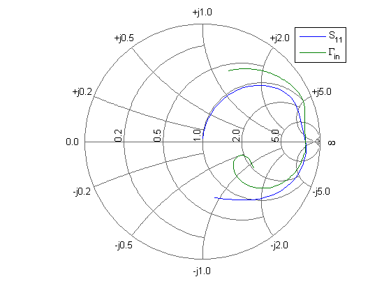
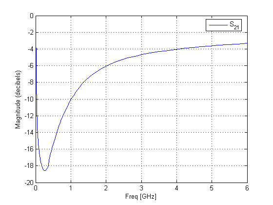
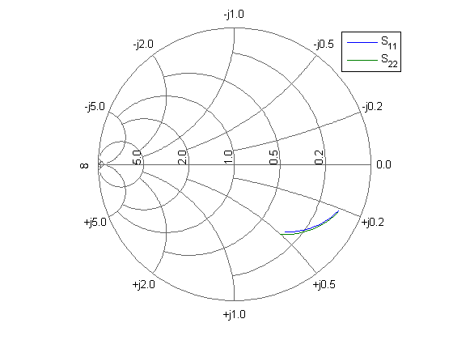
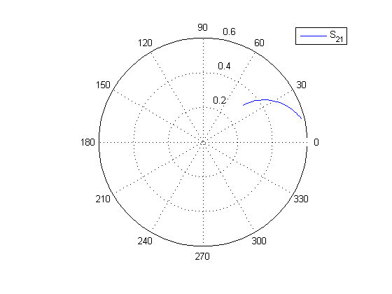

The RF Toolbox has several built-in RFDATA objects for storing, processing, and visualizing different types of RF data. This demo first creates an RFDATA.DATA object by reading the S-parameters of a 2-port passive network stored in a Touchstone data file 'passive.s2p', and visualizes the original S-parameters by using the built-in visualization methods of the data object. Then, it calculates and visualizes the S-parameters over a new frequency range.
Create an RFDATA.DATA object, by reading a Touchstone data file 'passive.s2p', using READ method of RFDATA.DATA object. For more information on RFDATA objects, type: help rfdata
data = read(rfdata.data, 'passive.s2p');
The data object has built-in properties and methods. You can use the data object's methods: GET and METHODS to view its properties and methods.
PropertiesOfData = get(data) MethodsOfData = methods(data);
PropertiesOfData =
Name: 'rfdata.data object'
Freq: [202x1 double]
S_Parameters: [2x2x202 double]
Z0: 50
OIP3: Inf
NF: 1
IntpType: 'linear'
ZS: 50
ZL: 50
You can use the data object's SET method to change its properties.
DefaultZl = get(data, 'Zl') set(data, 'Zl', 30+60i); NewZl = get(data, 'Zl')
DefaultZl =
50
NewZl =
30.0000 +60.0000i
LISTPARAM lists all the network parameters of the data object that can be visualized. You can plot any of these parameters, by using the built-in visualization methods of the data object, in a variety of different formats.
ParamsOfData = listparam(data)
FormatsOfS11 = listformat(data, 'S11')
ParamsOfData =
'S11'
'S12'
'S21'
'S22'
'GAMMAIn'
'GAMMAOut'
'VSWRIn'
'VSWROut'
'OIP3'
'NF'
FormatsOfS11 =
'dB'
'Magnitude (decibels)'
'Abs'
'Mag'
'Magnitude (linear)'
'Angle'
'Angle (degrees)'
'Angle (radians)'
'Real'
'Imag'
'Imaginary'
Plot S11 and the input reflection coefficient on a Z Smith chart
smith(data, 'S11', 'GAMMAIN', 'z'); legend show;
Plot S21, in dB, on an X-Y plane
plot(data, 'S21', 'db'); legend show;
The original S-parameters are given over the frequency range: 315KHz -> 6GHz. If you want to see the S-parameters over a new frequency range, you need to analyze the data object first.
f = [1e9:1e8:3e9]; analyze(data, f);
Plot S11 and S22 on a Y Smith chart
smith(data, 'S11', 'S22', 'y'); legend show;
Plot S21 on a polar plane
polar(data, 's21'); legend show;